Inicio / Sostenibilidad aplicada al sistema productivo / Tema 1
Material didáctico · Tema 1La sostenibilidad en las organizaciones empresariales
Apuntes de estudio. Qué es el desarrollo sostenible y qué normas lo impulsan, la Agenda 2030 y sus 17 ODS, los criterios ASG, los grupos de interés de una empresa, cómo se mide la sostenibilidad y cómo se invierte de forma responsable.
Descargar la presentación (PowerPoint, 3 MB)
Antes de empezar
Cuando termines el ciclo y empieces a trabajar, la empresa que te contrate aplicará, en mayor o menor medida, criterios de sostenibilidad: cómo gasta la energía, cómo trata a su plantilla, cómo toma sus decisiones o dónde invierte su dinero. Según el departamento en el que estés, manejarás datos sobre su impacto ambiental, sobre si cumple la normativa o sobre su contribución a los objetivos de desarrollo sostenible. Esta unidad te da el vocabulario y las herramientas para entender y valorar todo eso.
Al terminar la unidad sabrás.
- Qué es el desarrollo sostenible y qué marcos internacionales lo impulsan.
- Qué son la Agenda 2030 y los 17 ODS, y cómo se relacionan mediante las 5P.
- Qué son los criterios ambientales, sociales y de gobernanza (ASG) y qué ventajas aportan a la empresa.
- Quiénes son los stakeholders o grupos de interés y qué busca cada uno.
- Cómo se mide la sostenibilidad con KPI e indicadores.
- Qué es la inversión socialmente responsable (ISR) y qué productos financieros la hacen posible.
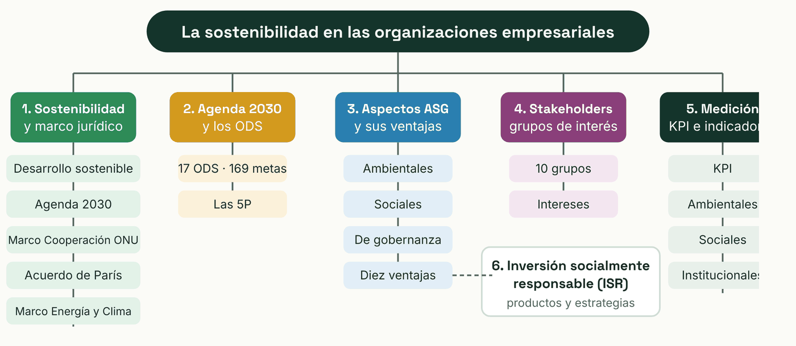
1. La sostenibilidad y su marco jurídico
1.1. ¿Qué es el desarrollo sostenible?
Definición.
El desarrollo sostenible es el aumento del bienestar de los ciudadanos sin poner en peligro el bienestar de las generaciones futuras, mediante la mejora continua de la calidad de vida y garantizando un equilibrio entre el crecimiento de la economía, el respeto del medioambiente y el bienestar social.
La idea viene del informe Nuestro futuro común (1987) de la Comisión Mundial sobre el Medio Ambiente y el Desarrollo de Naciones Unidas, que lo resumió en una frase que conviene recordar: es el desarrollo que «responde a las necesidades del presente sin comprometer la capacidad de las generaciones futuras de responder a las suyas».
La clave está en la palabra equilibrio. Una actividad no es sostenible si gana mucho dinero destruyendo el entorno, ni si cuida el entorno pero se arruina, ni si es rentable a costa de explotar a las personas. Por eso se habla de tres dimensiones o pilares:
| Dimensión | Qué busca | Ejemplo de empresa |
|---|---|---|
| Ambiental | Preservar la biodiversidad y los recursos naturales sin renunciar al progreso económico y social. | Grupo Bimbo reduce su impacto con agricultura regenerativa en los cultivos de los que se abastece. |
| Social | Fortalecer la cohesión y la estabilidad de los grupos sociales: empleo digno, igualdad, acceso a servicios básicos. | Cemex favorece la autoconstrucción para que las familias logren una vivienda digna. |
| Económica | Organizar los recursos para generar una rentabilidad sostenible a largo plazo, no solo beneficio rápido. | Unilever aumenta el reciclaje de envases y usa materiales reciclados, lo que también le ahorra costes. |
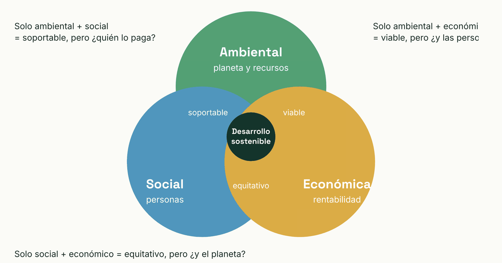
El desarrollo sostenible se ha convertido en el gran reto social del ciudadano global, y las empresas tienen un papel protagonista: para cumplir los objetivos de sostenibilidad es necesario que impulsen medidas y actúen como motores del cambio que la sociedad demanda. Según el Pacto Mundial de la ONU en España, la gran mayoría de las empresas ya dicen estar alineadas con las tendencias en sostenibilidad.
En el Valle del Jerte.
Una cooperativa de cereza es sostenible cuando el cultivo cuida el suelo y el agua de la garganta (ambiental), da trabajo estable a los vecinos y a los temporeros con buenas condiciones (social) y vende a un precio que permite a los socios vivir del campo año tras año (económica). Si falla uno de los tres, el modelo no aguanta: sin rentabilidad los jóvenes se marchan, y sin agua no hay cereza.
1.2. El marco jurídico
La sostenibilidad no puede depender de actuaciones locales aisladas y sin reglas comunes. Necesita recomendaciones, compromisos y una regulación global con un marco internacional único que dé fuerza y seguridad jurídica a las medidas y responda con agilidad a los retos. Los cuatro instrumentos principales son:
La Agenda 2030
Aprobada por la ONU en septiembre de 2015, ofrece a los países y a sus sociedades un nuevo camino para mejorar la vida de todas las personas sin dejar a nadie atrás, mediante 17 objetivos de desarrollo sostenible (ODS). La estudiarás a fondo en el apartado 2.
El Marco de Cooperación de las Naciones Unidas para el Desarrollo Sostenible
Es el instrumento más importante para planificar y ejecutar a nivel nacional las actividades de desarrollo de la ONU. Guía los programas en cada país e impulsa su planificación, ejecución, seguimiento, informes y evaluación para lograr la Agenda 2030. Tiene cuatro objetivos clave:
- Articular la respuesta colectiva de la ONU para ayudar a los países.
- Encarnar el espíritu de alianza que significa la Agenda 2030.
- Convertir los principios de la Agenda 2030 en acciones tangibles.
- Dar a los equipos de la ONU herramientas para adaptar sus respuestas a las necesidades y realidades de cada país.
El Acuerdo de París (COP21)
Es un tratado internacional vinculante (obliga legalmente a quien lo firma) sobre el cambio climático. Lo adoptaron 196 partes en París el 12 de diciembre de 2015 y entró en vigor el 4 de noviembre de 2016. Su gran objetivo es limitar el calentamiento mundial: los países se comprometen a alcanzar cuanto antes el punto máximo de emisiones de gases de efecto invernadero y, a partir de ahí, reducirlas. Sus elementos clave son:
- Limitar el aumento de la temperatura a 1,5 °C respecto a la época preindustrial.
- Revisar cada cinco años la contribución de cada país a la reducción de emisiones, con compromisos cada vez más ambiciosos.
- Ayudar a las naciones más pobres con financiación climática para que puedan reducir emisiones y adaptarse.
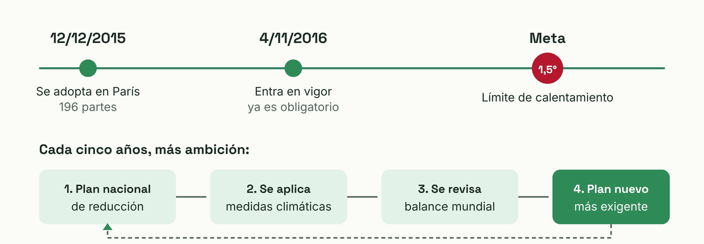
El Marco Estratégico de Energía y Clima
Es la respuesta de España, en consonancia con la Unión Europea. Se presenta como una oportunidad para modernizar la economía, crear empleo, liderar las energías renovables y las nuevas tecnologías, mejorar la salud de las personas y el medioambiente, y avanzar en justicia social. Lo forman tres piezas:
- Ley de Cambio Climático y Transición Energética (aprobada como Ley 7/2021).
- Estrategia de Transición Justa: acompaña a los trabajadores y comarcas que dependían de actividades contaminantes, como el carbón.
- Plan Nacional Integrado de Energía y Clima (PNIEC): fija objetivos concretos de renovables, eficiencia y reducción de emisiones.
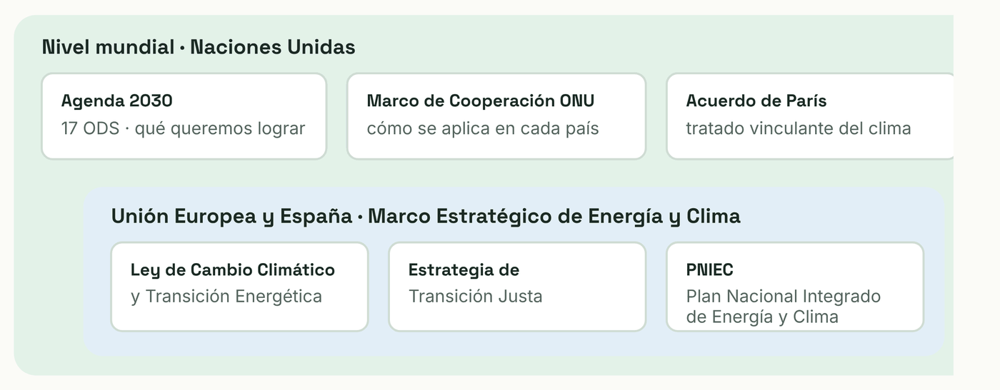
Actividad · Investiga.
El Foro Político de Alto Nivel sobre Desarrollo Sostenible (HLPF) es uno de los principales espacios de Naciones Unidas para hacer el seguimiento de los ODS. Busca su página web oficial y descubre cómo funciona, quién participa y qué relación tiene con los ODS. Después responde al cuestionario de Google Classroom. Tienes la actividad completa en Actividad 1: el Foro Político de Alto Nivel.
2. La Agenda 2030 y los ODS
Definición.
La Agenda 2030 para el Desarrollo Sostenible es un plan de acción a favor de las personas, el planeta y la prosperidad, que busca también fortalecer la paz y el acceso a la justicia. Plantea 17 objetivos de desarrollo sostenible (ODS) con 169 metas, de carácter integrado e indivisible, que abarcan las esferas económica, social y ambiental.
Es un llamamiento universal a la acción para poner fin a la pobreza, proteger el planeta y mejorar la vida de las personas en todo el mundo. «Integrado e indivisible» significa que los objetivos no se pueden cumplir por separado: avanzar en uno ayuda a otros, y descuidar uno frena a los demás. España ha asumido la Agenda y la concreta en su Estrategia de Desarrollo Sostenible 2030.
Cada ODS es un gran objetivo; las metas son los logros concretos que lo hacen medible. Por ejemplo, una de las metas del ODS 7 es aumentar el uso de energías renovables.
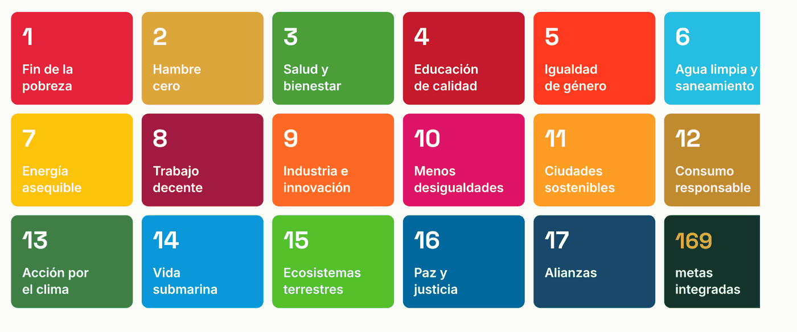
2.1. Los 17 objetivos, uno a uno
No hace falta memorizar las 169 metas, pero sí saber el objetivo principal de cada ODS y reconocer alguna de sus metas.
ODS 1 a 6: necesidades básicas de las personas
| ODS | Objetivo principal | Metas y detalles destacados |
|---|---|---|
| 1. Fin de la pobreza | Poner fin a la pobreza. | En España la pobreza extrema está superada, pero hay que garantizar la protección social de las personas vulnerables y de las afectadas por fenómenos climáticos extremos. Meta: ampliar los sistemas de protección social. |
| 2. Hambre cero | Erradicar el hambre, mejorar la nutrición y promover la agricultura sostenible y la seguridad alimentaria. | Que todas las personas accedan a una alimentación sana, nutritiva y suficiente. Meta: acabar con todas las formas de malnutrición. |
| 3. Salud y bienestar | Garantizar una vida sana y promover el bienestar a todas las edades. | Mantener un sistema sanitario universal, público y gratuito. Metas: reducir el consumo de alcohol y drogas, y las muertes y lesiones por accidentes de tráfico. |
| 4. Educación de calidad | Garantizar una educación inclusiva, equitativa y de calidad, con aprendizaje permanente para todos. | Educar en derechos humanos, paz, igualdad, ciudadanía y sostenibilidad. Meta: igualdad de acceso, con atención especial al alumnado con discapacidad. |
| 5. Igualdad de género | Lograr la igualdad de género y empoderar a todas las mujeres y niñas. | Igualdad real entre mujeres y hombres, con atención a quienes sufren discriminación múltiple. Meta: reducir la violencia de género. |
| 6. Agua limpia y saneamiento | Garantizar la disponibilidad y la gestión sostenible del agua y el saneamiento para todos. | El agua es un derecho esencial y un recurso clave para la economía y los ecosistemas. Metas: uso eficiente del agua y acceso universal al agua potable. |
ODS 7 a 12: prosperidad, trabajo y consumo
| ODS | Objetivo principal | Metas y detalles destacados |
|---|---|---|
| 7. Energía asequible y no contaminante | Garantizar el acceso a una energía asequible, segura, sostenible y moderna para todos. | La alerta climática obliga a transformar el sector energético. Metas: más energías renovables y más eficiencia energética. |
| 8. Trabajo decente y crecimiento económico | Impulsar un crecimiento sostenido, inclusivo y sostenible, el empleo pleno y productivo y el trabajo decente. | Reducir el desempleo, sobre todo el juvenil, y mejorar las condiciones laborales. Está muy unido al ODS 4: una buena educación es el motor de un trabajo de calidad. |
| 9. Industria, innovación e infraestructura | Construir infraestructuras resilientes, promover una industrialización inclusiva y sostenible y fomentar la innovación. | Una red de infraestructuras fiable vertebra el territorio y crea empleo. Metas: infraestructuras sostenibles y más investigación científica. |
| 10. Reducción de las desigualdades | Reducir la desigualdad en los países y entre ellos. | Desigualdades por sexo, edad, discapacidad, raza, etnia o religión. Metas: inclusión social, económica y política, e igualdad de oportunidades. |
| 11. Ciudades y comunidades sostenibles | Lograr que ciudades y asentamientos sean inclusivos, seguros, resilientes y sostenibles. | Bajo el principio de no dejar a nadie atrás. Metas: acceso a la vivienda y uso del transporte público. |
| 12. Producción y consumo responsables | Garantizar modalidades de consumo y producción sostenibles. | Uno de los ODS más transversales y muy importante en países desarrollados como España. Metas: reducir el desperdicio de alimentos y prevenir, reducir, reciclar y reutilizar los residuos. |
ODS 13 a 17: planeta, paz y alianzas
| ODS | Objetivo principal | Metas y detalles destacados |
|---|---|---|
| 13. Acción por el clima | Adoptar medidas urgentes para combatir el cambio climático y sus efectos. | Agricultura, turismo, agua y energía son sectores especialmente vulnerables. Metas: educación y sensibilización, y más capacidad de adaptación (resiliencia). |
| 14. Vida submarina | Conservar y utilizar de forma sostenible océanos, mares y recursos marinos. | Reducir la contaminación marina y crear códigos de buenas prácticas pesqueras. Metas: gestionar los ecosistemas marinos y costeros y combatir la pesca ilegal y excesiva. |
| 15. Vida de ecosistemas terrestres | Gestionar sosteniblemente los bosques, luchar contra la desertificación, frenar la degradación de las tierras y la pérdida de biodiversidad. | Metas: gestión sostenible de los bosques y lucha contra la desertificación. |
| 16. Paz, justicia e instituciones sólidas | Promover sociedades pacíficas e inclusivas, facilitar el acceso a la justicia y construir instituciones eficaces que rindan cuentas. | Luchar contra la corrupción y la delincuencia organizada, y usar las nuevas tecnologías para una justicia más ágil. Metas: acabar con el maltrato, la trata y la explotación infantil, la corrupción y los sobornos. |
| 17. Alianzas para lograr los objetivos | Fortalecer los medios de implementación y revitalizar la Alianza Mundial para el Desarrollo Sostenible. | Es la herramienta para lograr los otros 16: la cooperación internacional es decisiva. Metas: traspaso de tecnologías, refuerzo de capacidades y movilización de financiación. |
Los ODS en una empresa TIC.
Una pequeña empresa informática del Valle, como ValleNet SL, también puede contribuir: reacondicionar ordenadores para alargar su vida (ODS 12), llevar fibra o wifi a pueblos pequeños (ODS 9 y 10), configurar el ahorro de energía de los equipos de sus clientes (ODS 7) o contratar y formar a jóvenes de la comarca (ODS 4 y 8).
2.2. Las 5P del desarrollo sostenible
Definición.
Las 5P son las cinco esferas en las que se agrupan los ODS: Personas, Planeta, Prosperidad, Paz y Participación (también llamada Alianzas). Sirven para observar el progreso de los ODS y cómo contribuyen, juntos, al crecimiento económico, la equidad social y la protección del medioambiente.
- Personas. Que todas las personas puedan acceder a recursos para llevar una vida saludable, sin importar su género, nacionalidad, creencia, origen o capacidad económica, con igualdad de oportunidades e inclusión social.
- Planeta. Las políticas ambientales y el uso responsable de los recursos naturales son la base de un futuro sostenible: medidas serias contra el cambio climático y para conservar la biodiversidad, en tierra y en mar.
- Prosperidad. Finanzas sostenibles y un reparto justo de la riqueza (economía circular) para erradicar la pobreza y que todos disfruten de una vida próspera.
- Paz. Una sociedad sostenible es pacífica y justa: reduce las desigualdades y fomenta la cooperación y la convivencia.
- Participación. Alianzas sólidas entre gobiernos, población y empresas para buscar soluciones y llevar a cabo las acciones de la Agenda 2030.
Las 5P no son independientes sino interdependientes: promueven sinergias entre ellas y evitan soluciones fragmentadas. Adoptarlas como políticas es el primer paso hacia una sociedad más justa y un entorno de colaboración entre personas y empresas.
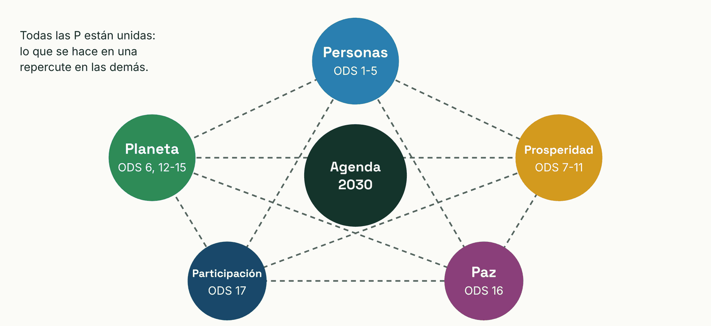
Ejemplo de interdependencia.
Un país con mucho paro y pobreza invierte en energías renovables (Planeta). Se crean empleos para instalar y mantener los parques (Prosperidad), las familias mejoran sus ingresos y su acceso a la salud y a la educación (Personas), baja la conflictividad social (Paz) y todo ello exige que gobierno, empresas y vecinos colaboren (Participación).
3. Los aspectos ambientales, sociales y de gobernanza (ASG)
Las empresas tienen una gran responsabilidad en la construcción de un futuro más sostenible. Aunque la sostenibilidad es un concepto global, hay tres pilares sobre los que una empresa puede trabajar y convertirse en líder de una sociedad más justa, solidaria y sostenible.
3.1. Los criterios ASG
Definición.
Los criterios ASG (en inglés ESG: Environmental, Social, Governance) son los criterios que se utilizan para evaluar el desempeño y el impacto de las empresas en tres ámbitos: Ambiental, Social y de Gobernanza.
Estos criterios se convierten en un conjunto de reglas que la empresa sigue al tomar decisiones, decisiones que no solo afectan a su entorno cercano sino que tienen repercusiones en todo el planeta. Afectan al valor de la empresa y a sus accionistas, directivos y gestores, que buscan revalorizar sus inversiones con un impacto positivo. Las empresas suelen trabajar los tres criterios de forma integrada, y sus acciones dependen mucho del sector en el que operan.
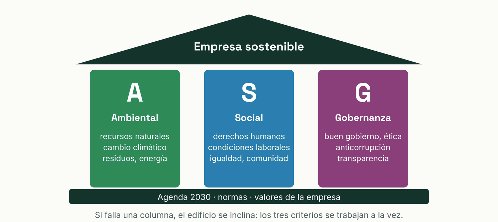
3.1.1. Criterios ambientales
Son los relacionados con la gestión de los recursos naturales, el cambio climático y la relación de la empresa con el planeta. Relacionan la actividad de la empresa con el impacto, directo o indirecto, que causa en el medioambiente: todas las decisiones empresariales tienen, en mayor o menor medida, repercusiones ambientales. Gracias a la concienciación de los ciudadanos, estos valoran positivamente el compromiso de las empresas con la eficiencia, la transparencia y la calidad, y lo toman como señal de productos y servicios más sostenibles.
Ejemplo.
Todas las empresas consumen electricidad, generan residuos y gastan materiales fungibles como el papel. Aplicar criterios ambientales es apostar por energías verdes (paneles solares), clasificar los residuos para su reciclaje, comprar materiales reciclados y digitalizar procesos para gastar menos papel.
3.1.2. Criterios sociales
Tratan de los derechos humanos, las normas laborales, las políticas de igualdad, la diversidad e inclusión y, en general, la relación con la sociedad y con las comunidades cercanas. Prestan especial atención a quienes están más cerca de la empresa: accionistas, empleados, clientes, proveedores y entorno local. Su compromiso social mejora la imagen de marca, actúa como imán para atraer talento y ayuda a fidelizar a los clientes.
Ejemplo.
Medidas para conciliar trabajo y familia (jornadas semanales más cortas, menos horas extra), igualdad de género, formación para la plantilla o colaboración en proyectos educativos, culturales y deportivos del pueblo. En Suecia, por ejemplo, es habitual que las empresas paguen el gimnasio a sus trabajadores para fomentar una vida sana.
3.1.3. Criterios de gobernanza
Se refieren a la estructura y el buen gobierno de la empresa: buenas prácticas, ética empresarial, lucha contra la corrupción y transparencia en la toma de decisiones. Es probablemente el criterio menos extendido, aunque tiene impacto interno y externo y refuerza el liderazgo ético; por eso el Pacto Mundial de la ONU insta a las empresas a trabajarlo. Al principio se pensaba solo para grandes corporaciones con accionistas, pero hoy se aplica a empresas de cualquier tamaño y tiene en cuenta a todos los afectados por sus decisiones.
Ejemplo.
Una empresa aprueba un código ético o un reglamento interno que fija cómo debe comportarse con clientes, proveedores, empleados y vecinos a partir de principios éticos y del interés general de la comunidad. Publicar las cuentas y explicar cómo se toman las decisiones también es gobernanza.
| Ambientales | Sociales | De gobernanza | |
|---|---|---|---|
| Qué evalúan | Recursos naturales, cambio climático, relación con el planeta. | Derechos humanos, normas laborales, igualdad, diversidad, comunidad. | Buen gobierno, ética, lucha contra la corrupción, transparencia. |
| Qué aportan | Los ciudadanos valoran el compromiso con la eficiencia, la transparencia y la calidad. | Mejor imagen de marca, atraen talento y fidelizan a los clientes. | Impacto interno y externo; liderazgo ético. Es el menos extendido. |
| Ejemplos | Paneles solares, reciclaje, materiales reciclados, digitalización. | Conciliación, igualdad, formación, proyectos en el pueblo. | Código ético, normas basadas en el interés general. |
3.2. Las ventajas de impulsar políticas ASG
Al aplicar políticas basadas en criterios ASG, la empresa obtiene ventajas para sí misma y para su entorno, cercano y global. Se resumen en un decálogo que explica por qué todas las empresas deberían aplicarlas:
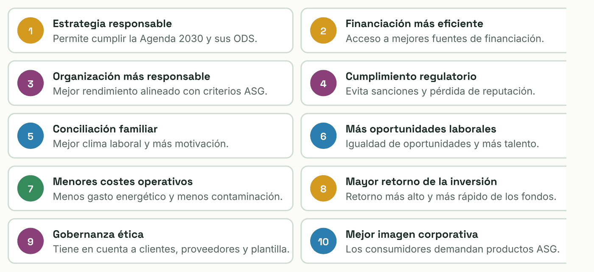
Idea clave.
Ser sostenible no es un gasto sin retorno: una empresa con buenas políticas ASG consigue financiación más barata, ahorra costes de energía, retiene a su plantilla, evita sanciones y gana clientes.
4. Los stakeholders y los criterios ASG
Definición.
Los stakeholders o grupos de interés son los individuos o grupos que tienen interés en una empresa y que se ven afectados por sus decisiones o influyen en ellas. Cada uno tiene sus propios intereses, metas y ambiciones.
Las decisiones de una empresa, sobre todo las de largo plazo, repercuten en muchos grupos, internos y externos. A la vez, lo que esos grupos deciden en su ámbito puede beneficiar o perjudicar a la empresa. Por eso la empresa necesita conocerlos: la matriz de stakeholders representa todas las partes que tienen interés en ella. Qué grupos existen depende sobre todo del tamaño de la empresa: un autónomo no tiene accionistas ni sindicatos, y una multinacional los tiene todos.
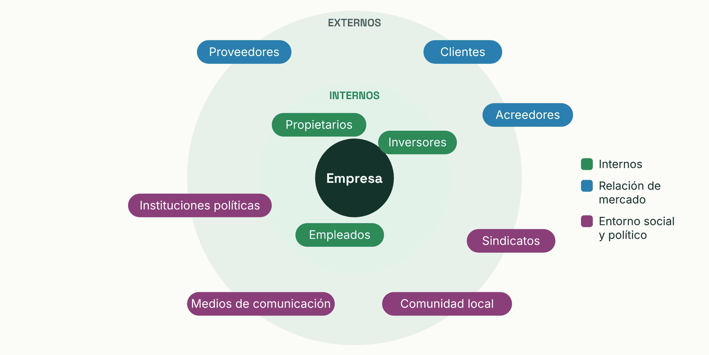
4.1. Clasificación de los stakeholders
- Propietarios. Personas o empresas que poseen acciones significativas o mayoritarias, y también los fundadores. Suelen implicarse en la estrategia y en los criterios ASG a largo plazo, sobre todo en los de gobernanza.
- Inversores. Accionistas que aportan financiación a la empresa. A diferencia de los propietarios, su interés principal es obtener el máximo rendimiento de sus acciones. Son quienes suelen promover las finanzas sostenibles.
- Empleados. El colectivo más importante: suponen una gran inversión de dinero y tiempo en capital humano y son clave en la estrategia y en el día a día. La empresa debe aplicar sobre todo criterios sociales, escuchar sus opiniones y valorar sus preocupaciones.
- Proveedores. Proporcionan materias primas, material fungible y productos para la venta. Sus intereses pueden chocar con los criterios ASG, en especial con los ambientales (por ejemplo, si ofrecen materiales baratos pero contaminantes).
- Clientes. El fin de la empresa es satisfacer sus necesidades con bienes y servicios. Mantener el contacto con ellos mediante acciones ASG ayuda a conocer sus motivaciones, deseos y necesidades.
- Acreedores. Aquellos con quienes la empresa tiene deudas, como los bancos. Las finanzas sostenibles y los criterios de gobernanza determinan cómo se posiciona la empresa ante ellos.
- Sindicatos. Organizaciones que representan a los trabajadores y buscan mejorar sus condiciones: sueldos, reparto de beneficios, condiciones laborales. La empresa debe contar con ellos en muchos aspectos.
- Comunidades locales. Personas que viven donde está la empresa, aunque no sean clientes. Les preocupan las repercusiones ambientales y el impacto sociolaboral de la empresa en su entorno.
- Medios de comunicación. La empresa debe verlos como colaboradores y transmisores de sus políticas ASG. Influyen mucho en la opinión pública.
- Instituciones políticas. Las administraciones públicas están interesadas en todo lo que ocurre a las empresas: recaudan sus impuestos y colaboran en el flujo circular de la renta.
| Grupo | Interés principal |
|---|---|
| Propietarios | Estrategia y criterios ASG a largo plazo, sobre todo de gobernanza. |
| Inversores | Máximo rendimiento de sus acciones; promueven las finanzas sostenibles. |
| Empleados | Mejores condiciones sociolaborales; son el colectivo más importante. |
| Proveedores | Suministrar materias primas; sus intereses pueden chocar con los ASG. |
| Clientes | Ver satisfechas sus necesidades, motivaciones y deseos. |
| Acreedores | Cobrar las deudas contraídas por la empresa (por ejemplo, los bancos). |
| Sindicatos | Mejorar sueldos, reparto de beneficios y condiciones laborales. |
| Comunidades locales | Repercusiones ambientales y sociolaborales en su entorno. |
| Medios de comunicación | Informar; pueden ser colaboradores y transmisores de las políticas ASG. |
| Instituciones políticas | Recaudar impuestos y colaborar en el flujo circular de la renta. |
4.2. Intereses contrapuestos
Los grupos de interés no siempre quieren lo mismo. El caso más típico es el de accionistas y empleados: los accionistas quieren que el beneficio sea lo más alto posible y repercuta en ellos; los empleados quieren participar del reparto de beneficios y mejorar sus condiciones. La empresa sostenible busca un equilibrio entre ambos.
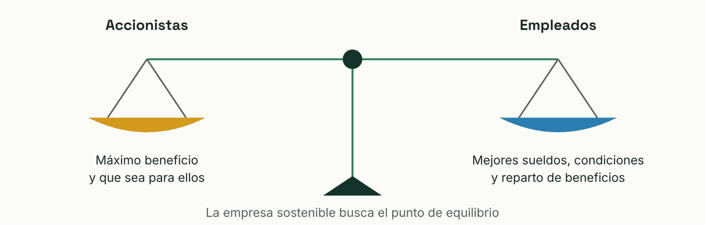
5. La medición de la sostenibilidad
Cuando una empresa decide actuar en sostenibilidad, necesita medir su desempeño. Lo que no se mide no se puede mejorar ni demostrar. Para ello usa métricas e indicadores que evalúan el impacto de sus acciones en el medioambiente, la sociedad y la economía.
5.1. Los indicadores clave de desempeño (KPI)
Definición.
Los KPI (Key Performance Indicators, indicadores clave de desempeño) son métricas cuantitativas que muestran cómo progresa la empresa hacia unos objetivos previamente definidos y de largo alcance, usando distintos niveles de cumplimiento.
Con los KPI la empresa deja claro qué quiere lograr, en qué plazo y cómo va a medir su cumplimiento. Un KPI bien formulado:
- Ayuda a lograr los objetivos estratégicos.
- Es medible y comparable en el tiempo.
- Da información a tiempo a los miembros de la organización.
Para medir su sostenibilidad, la empresa elabora KPI específicos ligados a los aspectos ambientales, sociales y de gobernanza. Las métricas más habituales son el consumo de energía, la gestión de residuos y la diversidad e inclusión laboral.
Medir no es solo una herramienta interna. También sirve para rendir cuentas: da a los consumidores la transparencia que exigen, mejora la reputación de la empresa y le facilita cumplir la normativa ambiental.
Ejemplo de KPI.
«Reducir un 20 % el consumo eléctrico de la oficina antes de diciembre de 2027, medido en kWh al mes con la factura y con medidores en el cuadro eléctrico». Tiene un objetivo, un plazo, una unidad y una forma de medirlo.
5.2. Los indicadores de sostenibilidad
Definición.
Los indicadores de sostenibilidad son factores que se pueden medir y que, además, contribuyen a que la actividad de la empresa sea sostenible en el tiempo y en sus acciones.
Una empresa es sostenible si crea valor económico, medioambiental y social a corto y a largo plazo y contribuye al progreso común de la sociedad. Sus planes de sostenibilidad se miden con indicadores asociados a objetivos específicos, que se plasman en cronogramas y suelen estar ligados a normas y recomendaciones aceptadas voluntariamente.
Los indicadores funcionan en tres pasos:
- Motivación principal: que se cumplan los objetivos propuestos, por ejemplo reducir las emisiones de dióxido de carbono para cumplir la Agenda 2030.
- Se miden las desviaciones: se compara lo conseguido con lo previsto, se toman medidas correctoras y se analiza la evolución a lo largo del tiempo.
- Rendimiento esperado: reflejan el rendimiento obtenido y el progreso del plan de sostenibilidad.
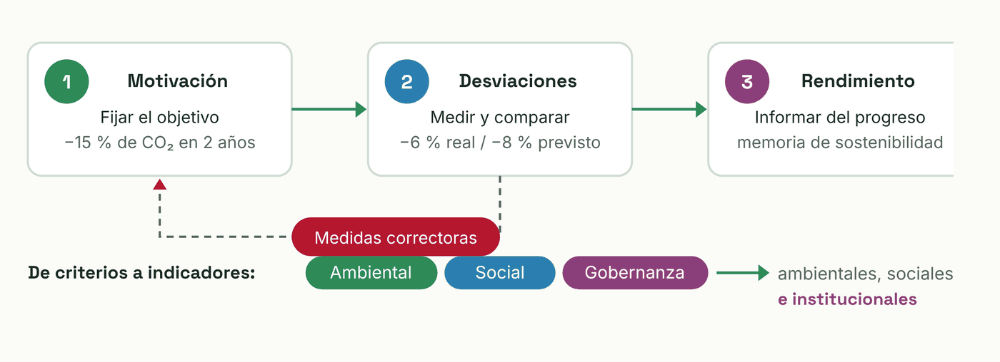
Los indicadores de sostenibilidad están ligados a los criterios ASG y se agrupan en tres ámbitos: ambientales, sociales e institucionales. Fíjate en que el tercero no se llama «de gobernanza» sino institucional, porque mide la solidez económica y financiera de la empresa.
5.3. Indicadores de sostenibilidad ambiental
Evalúan el resultado de las acciones de la empresa para reducir los daños al medioambiente y, en general, para cumplir los ODS relacionados con la tierra, los mares y los océanos. Las empresas industriales consumen mucha energía y generan residuos que pueden contaminar a nivel local y global; estos indicadores miden cuánto se reducen esos costes externos al aplicar políticas ASG. Los principales son:
- Cantidad de agua consumida. Cuantifica los metros cúbicos (m³) o litros de agua usados en procesos e instalaciones. Permite detectar pérdidas, optimizar circuitos cerrados de recirculación y evaluar la presión que la empresa ejerce sobre el agua de la zona.
- Ciclo de vida del producto. Analiza el impacto ecológico completo, desde la extracción de materias primas («de la cuna») hasta su eliminación o reciclaje («a la tumba», o «de la cuna a la cuna» si se recicla). Evalúa la durabilidad, la facilidad de reparación y el residuo que deja tras su uso.
- Materia prima utilizada. Evalúa el origen, el tipo y la eficiencia de los materiales. Distingue entre materias vírgenes, renovables, recicladas o certificadas, y promueve la economía circular y la reducción de desperdicios.
- Huella de carbono. Expresa en toneladas equivalentes de CO₂ (t CO₂e) el total de gases de efecto invernadero (GEI) emitidos directa o indirectamente. Se divide en tres alcances (ver figura).
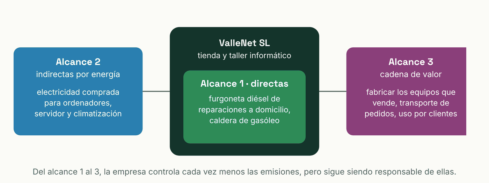
5.4. Indicadores de sostenibilidad social
Reflejan cómo se relaciona la empresa con las comunidades locales y con la sociedad, y afectan a trabajadores, clientes, proveedores y accionistas. Evalúan el capital humano interno y las relaciones con el entorno social, para garantizar condiciones dignas, éticas e inclusivas. Para ello es vital un departamento de recursos humanos que actúe de forma ética, justa y responsable: salarios justos, inversión en prevención de riesgos y políticas inclusivas. Los principales son:
- Gestión de la diversidad. Mide la presencia y convivencia de perfiles diversos en la plantilla (edades, orígenes, discapacidades, orientaciones sexuales, trayectorias formativas) y asegura que no haya sesgos en la contratación ni en la promoción.
- Cumplimiento de políticas de igualdad. Protocolos y auditorías para que mujeres y hombres tengan las mismas oportunidades de acceso, promoción y salario. Su indicador más claro es la brecha salarial de género en puestos de igual valor.
- Conciliación laboral y familiar. Medidas que equilibran trabajo y vida personal: teletrabajo o modelos híbridos, flexibilidad de turnos, jornada continua y permisos parentales ampliados.
- Seguridad, salud e higiene en el trabajo. Medidas de prevención de riesgos laborales (PRL) para evitar accidentes y enfermedades profesionales. Se controla con dos índices estandarizados:
Índice de frecuencia = (nº de accidentes con baja ÷ horas trabajadas) × 1 000 000
Índice de gravedad = (jornadas perdidas por accidente ÷ horas trabajadas) × 1 000
El índice de frecuencia dice cuántos accidentes hay por cada millón de horas trabajadas; el de gravedad, cuántas jornadas se pierden por cada mil horas. Cuanto más bajos, mejor.
5.5. Indicadores de sostenibilidad institucional
Abordan cuestiones económicas y financieras. Parten de que la empresa, para funcionar, debe aplicar principios de gobernanza prudentes que reduzcan los riesgos, buscar el consenso en sus decisiones y una cultura de sostenibilidad y transparencia. Su finalidad es asegurar que la empresa sea viable a largo plazo sin comprometer sus responsabilidades sociales ni ambientales. Los principales son:
- Fondo de maniobra (working capital). Es la diferencia entre el activo corriente (lo que la empresa tiene o cobrará a corto plazo: caja, existencias, cobros pendientes) y el pasivo corriente (las deudas que debe pagar a corto plazo). Es el «colchón de seguridad» que garantiza que puede pagar sus obligaciones inmediatas sin suspender pagos.
- Volumen de negocio (cifra neta de ventas). Total de ingresos netos por la venta de bienes o servicios durante el ejercicio. Refleja el tamaño comercial real de la empresa y su cuota de mercado.
- Rentabilidad empresarial. Capacidad de generar beneficios a partir de los recursos invertidos. Se mide con dos ratios:
- ROA (Return on Assets): beneficio obtenido con el total de activos. Mide la eficiencia del negocio.
- ROE (Return on Equity): beneficio neto que obtienen los socios sobre sus fondos propios.
Fondo de maniobra = Activo corriente − Pasivo corriente
ROA = Beneficio ÷ Activo total × 100 · ROE = Beneficio neto ÷ Fondos propios × 100
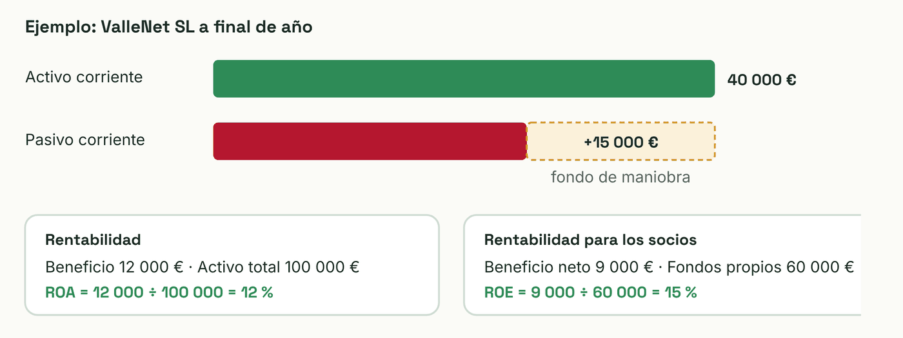
5.6. Los cinco indicadores de sostenibilidad más eficaces
Existen muchas métricas, pero algunas destacan porque han demostrado su eficacia para medir y evaluar las políticas de sostenibilidad:
| Indicador | Qué mide y por qué es útil |
|---|---|
| Huella de carbono | Las emisiones de gases de efecto invernadero de las operaciones y su impacto en el cambio climático. Es uno de los KPI más significativos por la cantidad de información, interna y externa, que ofrece y porque muestra la responsabilidad ambiental de la empresa. |
| Consumo de energía | Reducir la dependencia del carbón y la intensidad energética reduce las emisiones de las centrales. Hoy hay herramientas digitales que miden la energía que se gasta en cada fase del proceso. |
| Kilómetros recorridos en logística | La distancia recorrida en la cadena de producción y distribución refleja su impacto ambiental. Medirla bien, por tipo de transporte, permite elegir medios más sostenibles. |
| Residuos y reciclaje | Ligado a la economía circular: usar menos recursos, aplicar políticas de reciclaje y diseñar productos lo más reciclables posible. |
| Impacto social | Datos fiables para entender el impacto social de las operaciones y apostar por bienes y servicios éticos. |
6. La inversión socialmente responsable (ISR)
Definición.
La inversión socialmente responsable (ISR), también llamada finanzas sostenibles, incorpora a las decisiones de inversión criterios ambientales, sociales y de buen gobierno, además de los criterios financieros tradicionales: liquidez, rentabilidad y riesgo.
La ISR complementa a los criterios ASG y es fundamental para lograr una economía responsable con las personas, la sociedad y el planeta. Se basa en una visión ética de los negocios: se da más peso a la transparencia, a los valores éticos y a una gestión del riesgo acorde con la sostenibilidad. Requiere la colaboración de los sectores público y privado, y responde a lo que piden inversores, consumidores y clientes: un modelo económico más responsable.
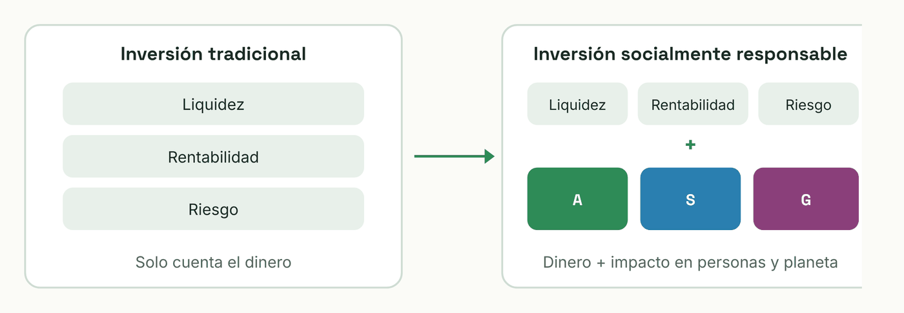
6.1. Productos de inversión sostenible
Fondos de inversión sostenibles
Un fondo de inversión reúne el dinero de muchos inversores para comprar una cartera variada de acciones o deuda de distintas empresas, gestionada por profesionales. Los fondos sostenibles, en lugar de comprar cualquier empresa rentable, aplican filtros éticos y ambientales:
- Exclusión: descartan sectores controvertidos (armamento, tabaco, carbón o empresas con escándalos laborales).
- Selección positiva: eligen las empresas líderes de cada sector en reducción de emisiones, energías limpias o trato justo a la plantilla.
Por qué importan: permiten que cualquier persona dirija sus ahorros hacia empresas responsables sin ser analista financiero y sin arriesgarlo todo en una sola empresa.
Bonos verdes y sociales
Un bono es, en esencia, un pagaré: un gobierno, ayuntamiento o empresa emite deuda para financiarse, y el inversor le presta su dinero hoy a cambio de recuperarlo en una fecha futura con un interés pactado. En un bono normal el emisor gasta el dinero en lo que quiera; en los bonos verdes y sociales el destino del dinero está blindado legalmente:
- Bonos verdes: solo para proyectos ambientales (parques eólicos, electrificación del transporte público, depuradoras de agua).
- Bonos sociales: para necesidades de la comunidad o colectivos vulnerables (vivienda pública accesible, hospitales comarcales, formación de jóvenes en paro).
Control y transparencia: el emisor debe publicar auditorías periódicas que demuestren que cada euro captado se ha destinado al proyecto prometido.
Capital de riesgo social
El capital de riesgo tradicional (venture capital) invierte en empresas emergentes (startups) que pueden crecer muy rápido, para multiplicar el dinero invertido. El capital de riesgo social aplica la misma lógica, pero a emprendedores cuyo negocio nace para resolver un problema social o ecológico concreto.
- No es una donación: a diferencia de una ONG, los inversores esperan recuperar su dinero con beneficios. La condición es que el éxito económico esté ligado al impacto conseguido. Por ejemplo, una startup que fabrica prótesis asequibles con impresión 3D, envases biodegradables a partir de residuos agrícolas o una plataforma de microcréditos para zonas rurales.
- Métricas duales: se evalúan tanto las cuentas como el impacto logrado (toneladas de residuos evitadas, personas beneficiadas).
Préstamos verdes
Son créditos que conceden los bancos y que usan el tipo de interés como palanca para impulsar prácticas más sostenibles. Hay dos modalidades:
- Por destino directo: el crédito se aprueba solo para comprar activos sostenibles, como sustituir la maquinaria de una fábrica por otra más eficiente o reformar un edificio para que consuma menos.
- Vinculado a objetivos (sustainability-linked): el dinero se usa para la actividad normal de la empresa, pero el interés es variable. Si la empresa cumple metas ambientales auditadas (por ejemplo, reducir un 15 % su consumo de agua o sus emisiones anuales), el banco le baja el interés; si no las cumple en el plazo pactado, la cuota se encarece.
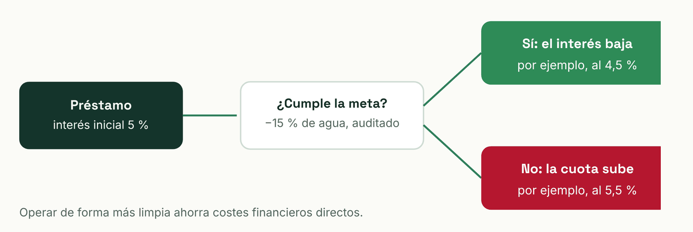
Idea clave.
Los préstamos verdes convierten la sostenibilidad en un incentivo económico medible: contaminar menos sale más barato.
6.2. Tipos de ISR y banca ética
La ISR se aplica a muchos productos financieros: fondos de inversión, planes de pensiones, seguros de vida, fondos de capital riesgo y fondos temáticos (mares y océanos, microfinanzas, energías limpias...). Para que un producto se considere ISR, su política de inversión debe indicar expresamente que incluye los criterios ambiental, social y de buen gobierno.
La banca ética también forma parte de la ISR: gestiona el dinero en inversiones y proyectos que buscan una rentabilidad no solo financiera, sino también social.
No confundas.
Un producto ISR busca rentabilidad financiera y social a la vez, aplicando criterios financieros y extrafinancieros. Un producto solidario es un producto financiero normal en el que la entidad cede parte de su comisión a una fundación u organización con fines sociales.
6.3. Estrategias de la ISR
Ante tantos fondos, se usan distintas estrategias para decidir si un fondo es sostenible:
- Exclusión: no son ISR las empresas o industrias de sectores poco éticos, como el tabaco, el juego o el armamento.
- Integración de factores ASG: los inversores valoran los criterios ASG y, en igualdad de condiciones, eligen la empresa con mayor valor ASG.
- Cumplimiento de tratados internacionales: no se invierte en empresas que incumplen la normativa y los tratados internacionales.
- Objetivo social enfocado a la sostenibilidad: fondos con temáticas claramente sostenibles, como el cambio climático o la limpieza de mares y océanos.
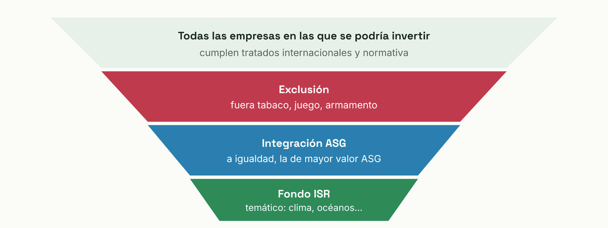
Ideas clave
- El desarrollo sostenible mejora el bienestar actual sin comprometer el de las generaciones futuras, equilibrando economía, medioambiente y bienestar social.
- El marco jurídico lo forman la Agenda 2030, el Marco de Cooperación de la ONU, el Acuerdo de París (vinculante, límite de 1,5 °C) y, en España, el Marco Estratégico de Energía y Clima.
- La Agenda 2030 fija 17 ODS y 169 metas, integrados e indivisibles; las 5P (personas, planeta, prosperidad, paz y participación) muestran su interdependencia.
- Los criterios ASG evalúan el desempeño ambiental, social y de gobernanza de la empresa, y aplicarlos le aporta ventajas estratégicas, económicas y de imagen.
- Los stakeholders son los grupos con interés en la empresa; tienen intereses propios y a veces contrapuestos, como accionistas y empleados.
- La sostenibilidad se mide con KPI e indicadores ambientales, sociales e institucionales, que permiten corregir desviaciones y rendir cuentas.
- La ISR añade los criterios ASG a la liquidez, la rentabilidad y el riesgo, mediante fondos sostenibles, bonos verdes y sociales, capital de riesgo social y préstamos verdes.
Glosario
Acuerdo de París: Tratado internacional vinculante sobre cambio climático (2015) que fija limitar el calentamiento a 1,5 °C.
ASG / ESG: Criterios ambientales, sociales y de gobernanza para evaluar el desempeño sostenible de una empresa.
Banca ética: Entidades que invierten el dinero en proyectos con rentabilidad financiera y social.
Bono verde / social: Deuda cuyo dinero solo puede usarse en proyectos ambientales o sociales, con auditorías que lo comprueban.
Fondo de maniobra: Activo corriente menos pasivo corriente: el colchón para pagar las deudas a corto plazo.
Huella de carbono: Total de gases de efecto invernadero emitidos, en toneladas equivalentes de CO₂, dividido en alcances 1, 2 y 3.
ISR: Inversión socialmente responsable o finanzas sostenibles.
KPI: Indicador clave de desempeño: métrica cuantitativa del avance hacia un objetivo.
ODS: Cada uno de los 17 objetivos de desarrollo sostenible de la Agenda 2030.
Resiliencia: Capacidad de resistir un problema y recuperarse de él.
ROA / ROE: Rentabilidad sobre el activo total / rentabilidad para los socios sobre sus fondos propios.
Stakeholder: Grupo de interés: quien afecta o se ve afectado por las decisiones de la empresa.
Vinculante: Que obliga legalmente a quien lo firma.
Autoevaluación
Elige la respuesta correcta. Las soluciones están en el desplegable del final.
1. Si hablamos de desarrollo sostenible...
- Nos referimos exclusivamente a la protección del medioambiente.
- Es la manera de solucionar problemas actuales sin tener en cuenta el futuro.
- Es el gran reto social del ciudadano global.
- Es un aspecto en el que solo tienen que actuar las instituciones públicas.
2. Los objetivos de desarrollo sostenible...
- Se promulgaron en el Acuerdo de París.
- Son meras intenciones de los países firmantes sin ningún compromiso.
- Son 17 e incluyen 19 metas.
- Fueron aprobados por la ONU e incluidos en la Agenda 2030.
3. Señala la respuesta correcta:
- El ODS 1 incluye metas sobre la salud y el bienestar.
- El objetivo principal del ODS 6 es garantizar la disponibilidad y la gestión sostenible del agua.
- No existe ningún ODS sobre el trabajo decente.
- Ninguna respuesta es correcta.
4. Sobre las 5P del desarrollo sostenible:
- Comprenden personas, planeta, prosperidad, paz y participación.
- Sirven para observar los progresos de los ODS.
- Son interdependientes y promueven sinergias entre ellas.
- Todas las respuestas son correctas.
5. Los criterios ASG...
- Son ambientales, sociales y de gobernanza.
- Las empresas los suelen aplicar de forma independiente.
- Las decisiones que se toman al aplicarlos solo tienen efecto local.
- Todas las respuestas son correctas.
6. Si las inversiones financieras son socialmente responsables...
- Hablamos de finanzas sostenibles.
- Se pueden materializar a través de bonos verdes y sociales.
- Se avanza hacia un modelo económico y productivo más responsable.
- Todas las respuestas son correctas.
7. Sobre los stakeholders, señala la respuesta correcta:
- Los propietarios se implican en los criterios ASG a corto plazo.
- Los empleados son el colectivo más importante de la empresa.
- Al tomar decisiones no se debe consultar a los sindicatos.
- Los medios de comunicación no son stakeholders.
8. La sostenibilidad se puede medir mediante los indicadores:
- KPY
- KIP
- KPI
- PIK
9. La huella de carbono...
- Es un indicador de sostenibilidad.
- Ofrece mucha información, interna y externa.
- Mide las emisiones de gases de efecto invernadero.
- Todas las respuestas son correctas.
10. El fondo de maniobra de una empresa con 30 000 € de activo corriente y 35 000 € de pasivo corriente...
- Es de 65 000 € y la empresa está muy saneada.
- Es de −5 000 € y la empresa podría tener problemas para pagar sus deudas a corto plazo.
- Es de 5 000 € y es un colchón de seguridad.
- No se puede calcular sin conocer el beneficio.
Ver soluciones de la autoevaluación
1 c · 2 d · 3 b · 4 d · 5 a · 6 d · 7 b · 8 c · 9 d · 10 b
¿Quieres seguir practicando? Haz el test de repaso del tema, con 28 preguntas autocorregibles.